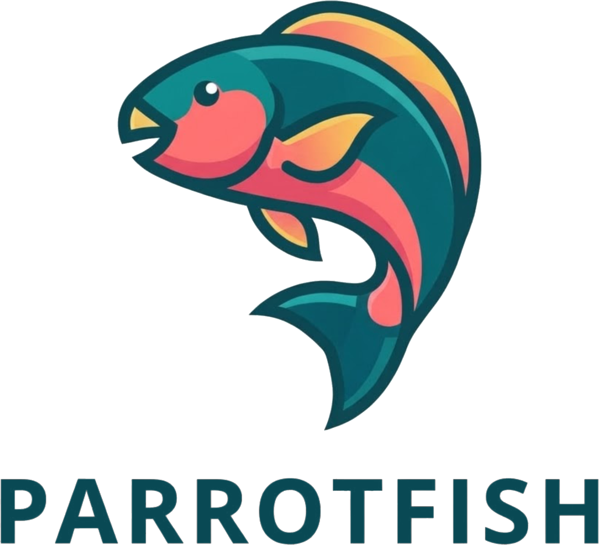

Makna Flosofis Logo
Bentuk Melengkung dan Melompat (Dinamisme & Adaptabilitas)
Tubuh ikan yang melengkung ke atas membentuk gerakan dinamis menyerupai bulan sabit atau lingkaran yang belum sempurna. Ini melambangkan fleksibilitas, dorongan untuk terus melangkah maju, serta kemampuan melompati berbagai rintangan dengan keluwesan dan ketahanan.
Perpaduan Warna yang Kontras (Kreativitas & Harmoni)
Penggunaan kombinasi warna teal/toska, merah muda/oranye, dan kuning emas melambangkan keragaman:
Teal/Toska (Hijau-Biru): Melambangkan kedalaman, ketenangan, stabilitas, dan keterikatan dengan alam bawah laut.
Merah Muda & Oranye: Menyimbolkan energi, keberanian untuk tampil beda, antusiasme, serta kehangatan.
Kuning Emas: Melambangkan keunggulan, keceriaan, dan optimisme.
Filosofi: Kombinasi ini menunjukkan kemampuan untuk menyatukan perbedaan menjadi satu kesatuan yang indah dan harmonis.
Karakter Ikan Kakatua / Parrotfish (Peran Ekologis & Kebermanfaatan)
Di alam, ikan kakatua dikenal sebagai penjaga ekosistem terumbu karang yang aktif membersihkan alga dan menghasilkan pasir putih.
Filosofi: Logo ini mewakili entitas yang tidak hanya indah secara visual, tetapi juga membawa dampak positif, menjaga keseimbangan lingkungan, serta memberi manfaat nyata bagi sekitarnya.
Paruh dan Mata yang Tegas (Visi & Fokus)
Bentuk mulut yang menyerupai paruh burung kakatua serta mata bulat yang jernih menyimbolkan ketajaman visi, ketegasan dalam mengeksekusi tujuan, dan pandangan yang selalu optimis menatap masa depan.
Tipografi Bold dan Bersih (Profesionalisme & Stabilitas)
Tulisan "PARROTFISH" menggunakan huruf kapital sans-serif yang tebal dan nkokoh dengan warna hijau tua. Ini menyeimbangkan karakter ilustrasi yang penuh warna, melambangkan fondasi yang kuat, kepercayaan diri, profesionalisme, serta kepemimpinan yang dapat diandalkan.